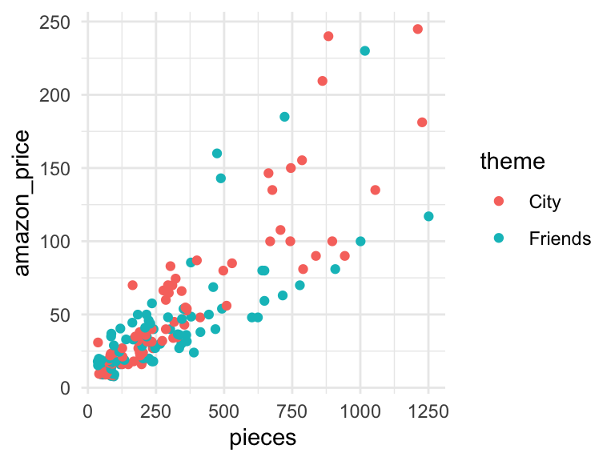

Homework 05
Due: Friday of Week 5 at start of class
There is a homework template available if you’d like to use that as a starter file, and copy and paste the code as needed.
ImportantImportant!
I will add problems after each class day. Be sure to check back here after each class meeting for new problems.
Problem 1: Fri
Note
You do not need to load the data into R for this question
An article was published that suggested that Lego Friends sets are less complex than other comparable Lego sets (https://momsla.com/why-my-daughters-wont-be-playing-with-lego-friends/). The author claimed that “it’s clear to see how these Friends are dumbed down.” Is there a difference in Lego Friends sets and Lego City sets regarding the Amazon price and the complexity? (We will use the number of pieces per set as a measure of complexity.) Below is a graph, summary output from the multiple regression model fit, and covariance matrix.
Call:
lm(formula = amazon_price ~ pieces * theme, data = lego_friends)
Residuals:
Min 1Q Median 3Q Max
-63.709 -10.501 -3.327 5.781 104.135
Coefficients:
Estimate Std. Error t value Pr(>|t|)
(Intercept) 1.503659 3.915811 0.384 0.701475
pieces 0.161395 0.009026 17.881 < 2e-16 ***
themeFriends 7.503656 5.568711 1.347 0.179677
pieces:themeFriends -0.046491 0.013731 -3.386 0.000887 ***
---
Signif. codes: 0 '***' 0.001 '**' 0.01 '*' 0.05 '.' 0.1 ' ' 1
Residual standard error: 24.04 on 165 degrees of freedom
Multiple R-squared: 0.7331, Adjusted R-squared: 0.7283
F-statistic: 151.1 on 3 and 165 DF, p-value: < 2.2e-16vcov(lego_lm) (Intercept) pieces themeFriends pieces:themeFriends
(Intercept) 15.33357696 -2.636947e-02 -15.33357696 2.636947e-02
pieces -0.02636947 8.146713e-05 0.02636947 -8.146713e-05
themeFriends -15.33357696 2.636947e-02 31.01054600 -5.706200e-02
pieces:themeFriends 0.02636947 -8.146713e-05 -0.05706200 1.885430e-04Do the slopes between these models differ? Use an appropriate hypothesis test to support your claim. State your hypotheses, test statistic, p-value, and conclusion.
Calculate a 90% confidence interval for the slope of the
Citytheme LEGO sets and interpret your interval in context.Calculate a 90% confidence interval for the slope of the
Friendstheme LEGO sets and interpret your interval in context.
Problem 2: Fri
According to the EPA, lake ice duration can be an indicator of climate change. This is because lake ice is dependent on several environmental factors, so changes in these factors will influence the formation of ice on top of lakes. As a result, the study and analysis of lake ice formation and duration can inform scientists about how quickly the climate is changing, and are critical to minimizing disruptions to lake ecosystems. We can examine the ice duration of Lake Mendota and Lake Monona, two lakes in the Madison, WI area, over 152 years. It contains the following variables:
yearlake: whether the lake is Mendota or Mononaice_duration: number of days that the lake was frozen, excluding periods where it thaws before refreezing againair_temp: the average air temperature in degrees Celsius for the winter (Nov to April)
- SLR model: \(\mu(\operatorname{ice\_duration}|X) = \beta_0 + \beta_{1}(\operatorname{air\_temp})\)
- Parallel slopes model: \(\mu(\operatorname{ice\_duration}|X)= \beta_0 + \beta_{1}(\operatorname{air\_temp}) + \beta_{2}(\operatorname{lake}_{\operatorname{Monona}})\)
- Different lines model: \(\mu(\operatorname{ice\_duration}|X)= \beta_0 + \beta_{1}(\operatorname{air\_temp}) + \beta_{2}(\operatorname{lake}_{\operatorname{Monona}}) + \beta_{3}(\operatorname{air\_temp} \times \operatorname{lake}_{\operatorname{Monona}})\)
ice_data <- read.csv("https://aluby.github.io/stat230/data/ice_data.csv")Create an appropriate visualization of the data and describe the relationship between
ice_durationandair_tempandlake. Based on your findings, which model do you think will be most appropriate?Fit the different lines model and report the coefficients and standard errors in your homework writeup.
Find a 95% confidence interval for the difference in effects of
air_tempbetween Lake Mendota and Lake Monona. Interpret the interval in context.Fit the parallel lines model and report the coefficients and standard errors in your writeup. Comment on how the estimates and standard errors changed compared to the different lines model in context of the data.
Perform an appropriate test comparing the fit of the different lines model to the SLR model. What do you conclude?
Problem 3: Influence Diagnostics in R
A large, national grocery retailer tracks productivity and costs of its facilities closely. Data were obtained from a single distribution center for a one-year period. Each data point for each variable represents one week of activity. The variables included are
cases: the number of cases shippedindirect_costs: the indirect costs of the total labor hours as a percentageholiday: a qualitative predictor called holiday that is coded 1 if the week has a holiday and 0 otherwise,total_labor: the total labor hours
Before anything, run the code chunk below to load the data set, fit the multiple regression model, and create the augmented dataset.
# grocery <- read.csv("https://aluby.github.io/stat230/data/grocery.csv")
grocery <- read.csv(here::here("data/grocery.csv"))
grocery_lm <- lm(total_labor ~ cases + indirect_costs + holiday, data = grocery)
grocery_aug <- augment(grocery_lm) |>
rownames_to_column(var = "index") - Create plots of leverage, the standardized residuals, and Cook’s distance against the row index. (You will have to use the augmented dataset and
gf_point()) - Based on the index plot of the standardized residuals, are there any observations outlying in the Y direction? If so, identify them by their row number.
- Based on the index plot of the leverage, identify any outlying X observations (by row number).
- Suppose that management wishes to predict the total labor hours required to handle the next shipment containing 300,000 cases whose indirect costs of the total hours is 7.2 and it’s not a holiday week (
holiday = 0). Construct a scatter plot ofcasesagainstindirect_costsand determine visually whether this prediction involves an extrapolation beyond the range of the data. - Based on Cook’s distance, are any of the observations you identified in parts (b) and (c) influential? Explain.
Problem 4: A new diagnostic
Another way to consider the influence of a point is to calculate the average absolute percent difference in the fitted value when the point is removed from the data set. This may be more interpretable to the “general public” than Cook’s distance. The average absolute percent difference is calculated as
\[\text{Mean absolute percent difference (MAPD)} = \frac{1}{n} \sum_{i=1}^{n} |\frac{\hat{y}_i - \hat{y}_{i(i)}}{\hat{y}_i}|\]
- 1
- Fit the regression model to the data set with observation 16 removed (the number is the row number). You can also delete multiple observations at once, to see join influence, by entering multiple comma separated values.
- 2
- Obtain the fitted values for the full data set.
- 3
- Obtain the predicted values for every observation in the full data set using the model with observation 16 removed.
- 4
- Calculate the average absolute percent difference.
The top four Cook’s distance values are associated with observations 16, 20, 32, 43, and 51 in Problem 7. Calculate the average absolute percent difference when each of these observations is removed from the data set. Fill in the following table with your results
| Observation (row) | MAPD |
|---|---|
| 16 | |
| 20 | |
| 32 | |
| 43 |
Summarize what the mean absolute percent difference indicates about the influence of each of the cases? Does is agree with your assessment based on Cook’s distance in Problem 7?